Шаблон формы позволяет гибко настроить внешний вид формы — добавить на неё дополнительные кнопки и виджеты, а также применить скрипт.
Таким образом можно настроить:
- формы создания, просмотра, редактирования элемента приложения;
- в бизнес-процессе — формы задачи, стартового события, задачи согласования и ознакомления, а также карточки экземпляра процесса.
Можно создать несколько шаблонов одной формы. Кроме того, исходные настройки формы сохраняются, вы всегда можете применить шаблон по умолчанию.
Настроить шаблон в дизайнере
Шаблоны создаются в дизайнере интерфейсов. Чтобы открыть дизайнер:
- Перейдите к настройкам шаблона:
- для настройки формы приложения откройте раздел и нажмите на значок шестерёнки рядом с названием приложения. Выберите пункт Настройка формы. Затем перейдите в расширенный режим настройки форм и откройте вкладку нужной формы: Создание, Просмотр, Редактирование;
- если вы создаёте форму задачи, стартового события, задачи согласования или ознакомления в бизнес-процессе, дважды нажмите на элемент на схеме процесса и перейдите на вкладку Форма.
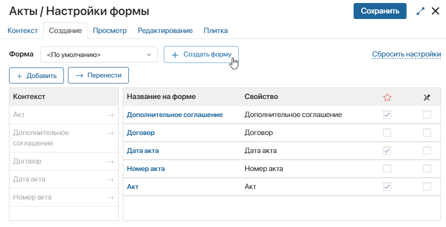
При создании формы приложения откроется окно, в котором можно ввести название нового шаблона, добавить описание и выбрать иконку.
- Для перехода к настройке уже существующего шаблона выберите его название и нажмите кнопку Редактировать форму на соответствующей вкладке.
Также перейти к созданному шаблону можно, выбрав в меню раздела или приложения пункт Интерфейсы, или в разделе Администрирование > Интерфейсы. Затем нажмите на название формы.
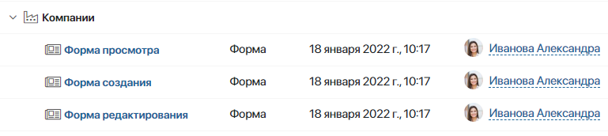
Вкладки дизайнера
Low-code дизайнер, в котором происходит настройка формы, состоит из нескольких вкладок: Шаблон, Контекст, Скрипты, История, Настройки и Файлы.
- Шаблон — здесь вы можете полностью настроить форму: отредактировать её заголовок, изменить кнопки или создать новые, а также добавить виджеты и свойства. Форму можно сделать динамической — поля на форме будут показываться или скрываться в зависимости от введённых пользователем данных. Подробнее об этом читайте в статье «Динамические формы»;
- Контекст — здесь добавляются свойства, которые можно выносить на поле шаблона, а также использовать при написании скриптов. Чтобы создать свойство, нажмите кнопку + Добавить и укажите его параметры;
- Скрипты — на этой вкладке вы можете написать скрипт, чтобы настроить поведение виджетов, например, показать всплывающее окно при наведении курсора на определенную область формы или страницы. Подробнее об этом читайте в статье «Скрипты в виджетах» и в справке ELMA365 TS SDK;
- История — на этой вкладке отображаются все опубликованные версии настроенной формы приложения, задачи или стартового события. Вы можете посмотреть время, автора и комментарий, оставленный при публикации, а также восстановить одну из предыдущих версий формы. Для этого выберите версию в списке, нажмите кнопку Применить версию и подтвердите действие. Текущий черновик формы будет заменён. Все сохранённые, но не опубликованные изменения будут утеряны. Чтобы восстановленная версия стала доступна пользователям, снова опубликуйте форму приложения. При работе с шаблоном формы задачи необходимо снова опубликовать бизнес-процесс, к которому относится задача;
- Настройки — здесь можно:
- отключить отображение виджета с ошибками валидации при некорректном заполнении полей на форме;
- разрешить размещение пользовательского виджета на верхней или боковой панели и настроить отображение виджета в дизайнере интерфейсов;
- указать функции из скриптов, которые вы хотите применять при отображении виджета и валидации формы. По умолчанию в процессе отображения виджета выполняются функции
onInit(),canRender()иonLoad(), но вы можете заменить их другими функциями; - разрешить использовать в скриптах глобальные константы и виджеты из разделов системы;
- Файлы — на этой вкладке вы можете добавить библиотеки и пользовательские функции на языке Javascript, чтобы обращаться к ним в клиентских скриптах.
Подробнее о каждой вкладке читайте в статье «Вкладки дизайнера».
Добавление виджета на форму
Виджет — это элемент интерфейса с определёнными функциональными возможностями для решения таких задач, как загрузка файла, отображение инструкции, ленты, списка пользователей и т. д. Виджеты позволяют создать максимально удобную для работы форму — наглядно разместить поля, добавить кнопки и настроить взаимодействие пользователя с интерфейсом.
Чтобы добавить виджет на форму, перейдите на вкладку Шаблон. Вы можете разместить виджет:
- в основной части формы — перетащите виджет с правой панели на шаблон формы;
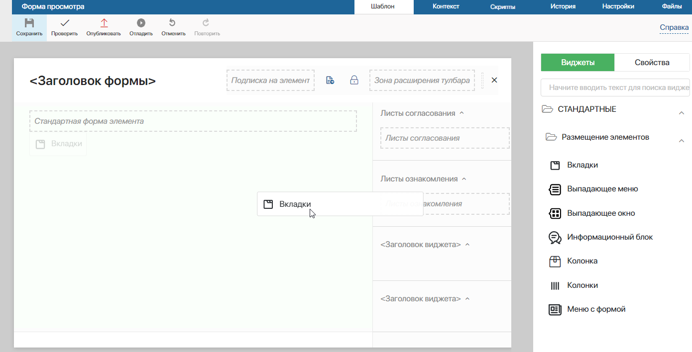
- на боковой панели — перетащите виджет на боковую панель или нажмите на ссылку + Виджет. Размещение пользовательского виджета на боковой панели включается при его создании;
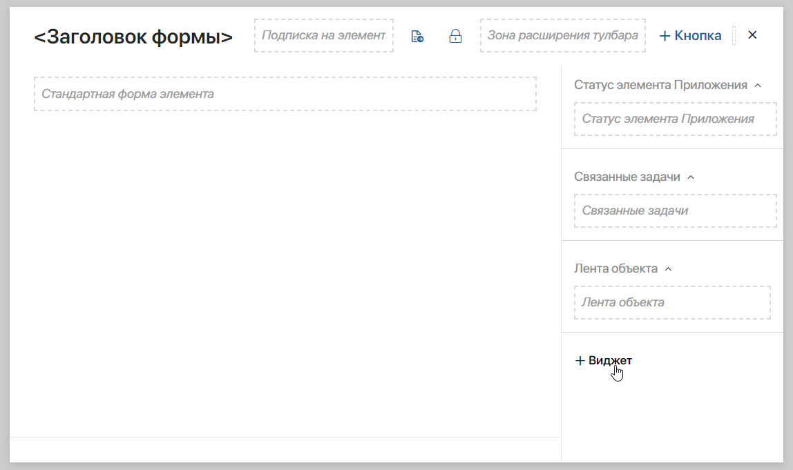
- на верхней панели — перенесите виджет на верхнюю панель или нажмите + Кнопка. Размещение пользовательского виджета на верхней панели можно разрешить при его создании.
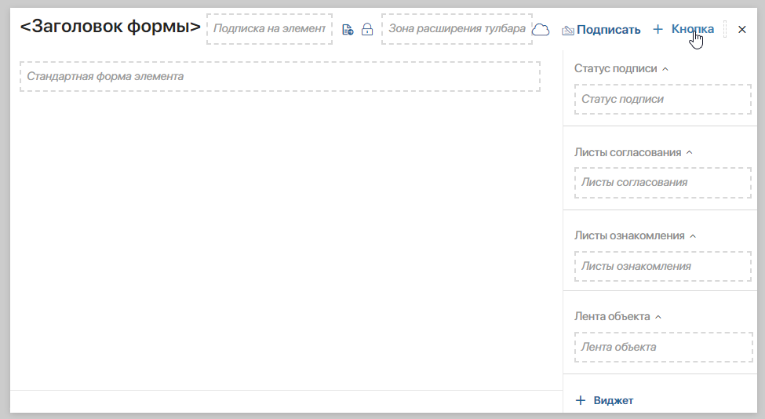
Откроется окно настройки виджета. Подробнее о каждом виджете вы можете прочитать в разделе «Типы виджетов».
При работе с виджетами вы можете использовать кнопки Отменить и Повторить, расположенные на верхней панели инструментов.
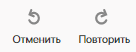
Кнопка Отменить позволяет отменить последнее ваше действие (добавление, перемещение или удаление виджета, изменение его настроек). Кнопка Повторить выполняет отмененное действие повторно.
Если вы настраиваете сложный интерфейс с большим количеством виджетов, вы можете воспользоваться функцией навигации по полю для моделирования, чтобы быстро найти нужный элемент формы.
Скрыть боковую панель на шаблоне формы
По умолчанию на шаблоны добавлен виджет Правая боковая панель. Чтобы скрыть боковую панель, нажмите на свободное от виджетов место на поле для моделирования. В правом верхнем углу появится ссылка Модальное окно. Нажмите на значок шестеренки и в открывшемся окне выключите опцию Показывать боковую панель. Сохраните настройки. Боковая панель будет скрыта.
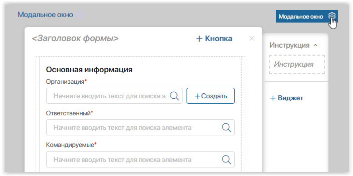
Кроме того, вы можете связать видимость панели с контекстной переменной. Она будет показываться при определенном значении переменной. Подробнее о том, как это сделать, читайте в статье «Системные настройки виджетов».
Добавление свойств на форму
Вы можете выносить на шаблон свойства приложения или бизнес-процесса, системные свойства виджетов, а также переменные, добавленные на вкладке Контекст. Для переменной типа Приложение или Пользователи с подтипом Один доступны вложенные поля.
На правой панели вкладки Шаблон перейдите на вкладку Свойства. Затем перетащите свойство на основную область формы или на боковую панель.
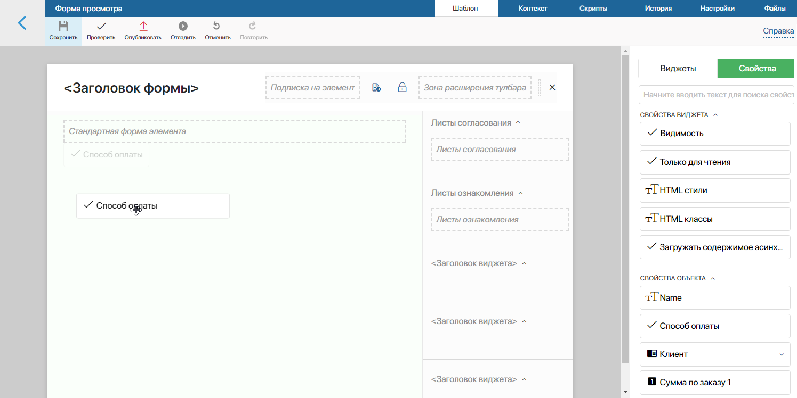
При перетаскивании на форму свойства помещаются в виджет-контейнер, который называется Строка формы. В свою очередь Строка формы может размещаться внутри других виджетов.
Скрыть название свойства или пустое поле
Чтобы не перегружать рабочую область, вы можете скрывать на форме:
- названия добавленных свойств, оставив только содержимое полей;
- пустые поля.
Для этого:
- Выделите элемент Строка формы, в котором размещаются вынесенные на форму свойства. Затем нажмите на значок шестерёнки.
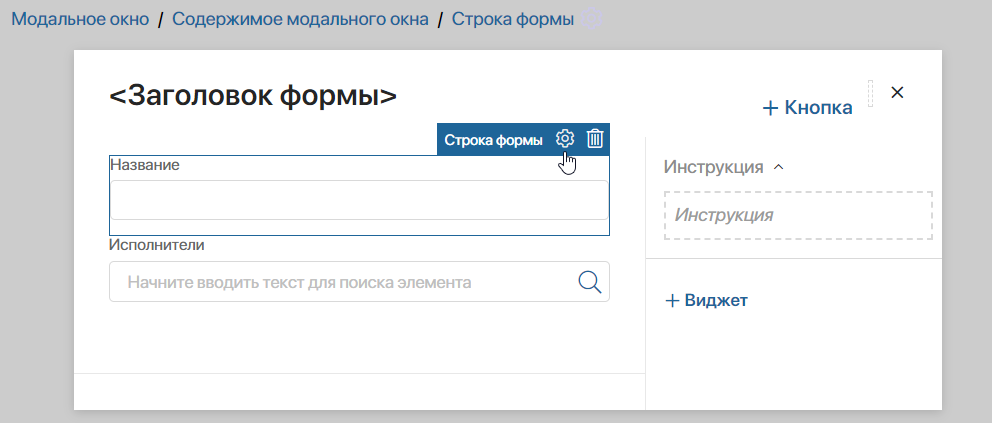
- В открывшемся окне:
- чтобы отобразить на форме только содержимое поля без его названия, снимите флажок Показывать название на форме;
- чтобы скрыть на форме пустое поле, установите флажок Скрывать, если не заполнено.
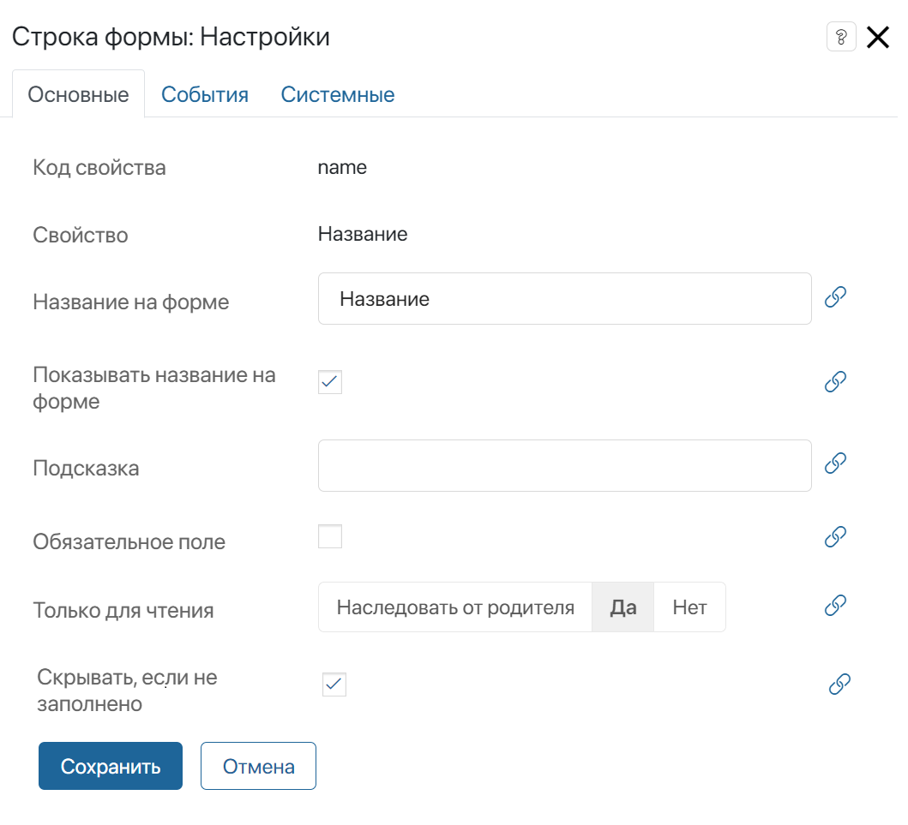
- Нажмите Сохранить.
Обратите внимание, эти опции доступны только для полей, добавленных на форму с вкладки Свойства и располагающихся в виджете Строка формы.
Проверить и применить настроенный шаблон
На верхней панели дизайнера располагаются кнопки для работы с настроенным шаблоном:
- Проверить — кнопка проверки настроенных виджетов на наличие ошибок в составлении;
- Отладить — кнопка доступна при настройке шаблона формы приложения. Нажав на нее, вы можете проверить, как будет выглядеть форма для пользователей. Подробнее об этом читайте в статье «Отладить интерфейс в дизайнере».
Чтобы применить настроенный шаблон нажмите кнопку Сохранить на верхней панели. Если вы работаете с формой приложения, дополнительно нажмите кнопку Опубликовать, чтобы виджеты отобразились на формах и стали доступны пользователям. При публикации вы можете оставить комментарий.
Каждая опубликованная версия шаблона будет отображаться в дизайнере интерфейсов на вкладке История. Вы можете посмотреть краткую информацию о версии, а также восстановить одну из предыдущих версий настроенного шаблона. Подробнее читайте в статье «Дизайнер интерфейсов».
Повторное использование шаблона
Настроенную форму можно использовать повторно. Так, шаблон, который вы настроили для формы создания, можно использовать повторно на форме редактирования. Просто выберите его в выпадающем списке.
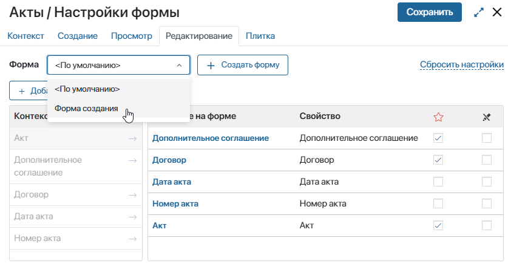
Теперь такие элементы, как виджеты, кнопки и заголовки, добавленные в шаблон создания, отобразятся на форме редактирования.
Однако если список полей на вкладке Редактирование отличается от списка полей на вкладке Создание, поля на формах будут отличаться, несмотря на то что вы выбрали тот же шаблон.
Чтобы набор полей на форме создания и редактирования был одинаковым, измените шаблон. Для этого нажмите Редактировать форму и удалите виджет Стандартная форма элемента, который отвечает за отображение полей на вкладках Создание и Редактирование.
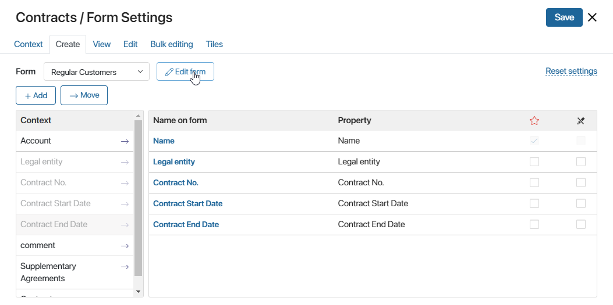
Затем перейдите на вкладку Свойства и добавьте нужные поля на поле для моделирования. Тогда и на форме создания, и на форме редактирования будет показан одинаковый набор полей.
Аналогичным образом вы можете использовать настроенный шаблон процессной задачи в других задачах этого процесса.
Настроив один шаблон для нескольких форм приложения, вы можете задать разные условия отображения виджетов на этих формах с помощью скрипта.